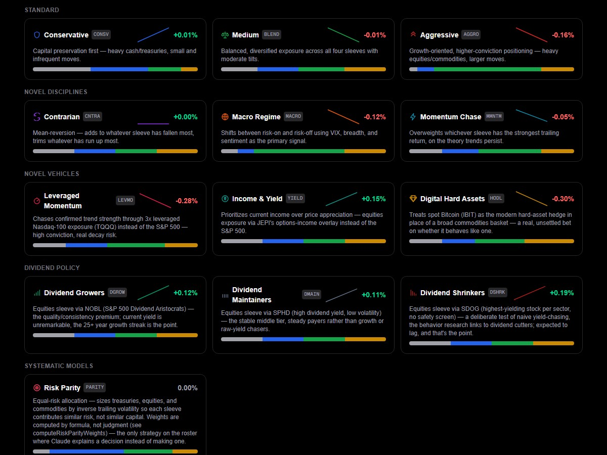
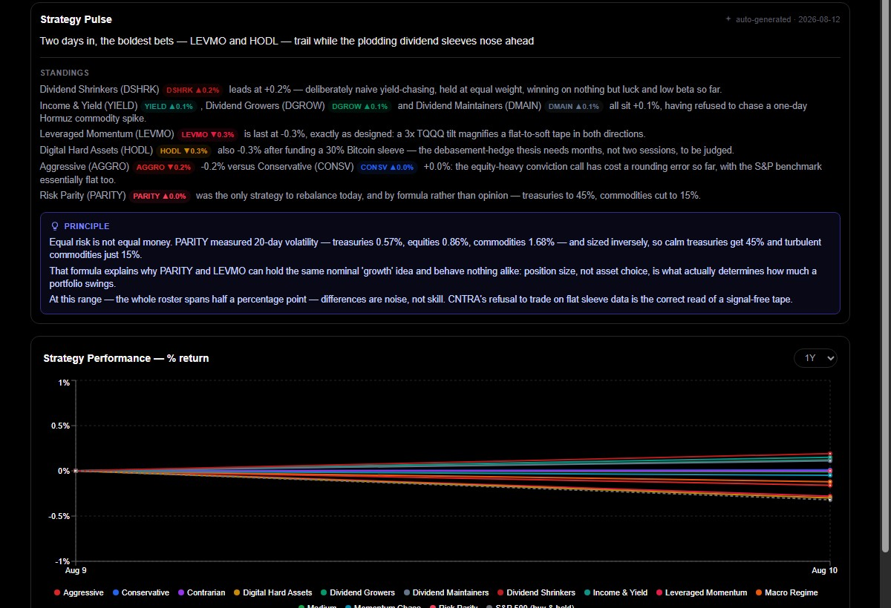
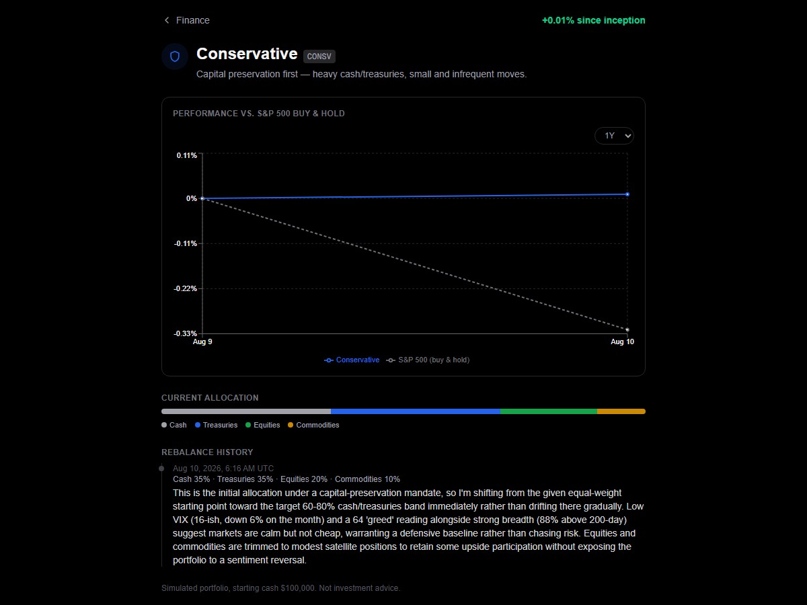

Product update · August 12, 2026
Corticorp News just picked up a real Finance desk. Every day, Claude reads the market and writes a plain-English briefing — then puts its own reasoning to work managing 12 simulated investment strategies, each rebalanced and explained on the record, tracked live against a simple S&P 500 buy-and-hold benchmark.
No secret get-rich schemes, no price targets — just disciplined, data-backed positioning you can actually watch happen.
What's new
Every session gets one auto-generated briefing broken into four honest angles — Fundamental (what companies and data actually did), Technical (what the tape and breadth say), Sentiment (Fear & Greed, VIX, how crowded the trade is), and Stance (what it all adds up to). Real tickers, real prices, real index levels — not a canned summary.
The bigger idea
Each strategy starts with $100,000 in simulated cash and a distinct mandate — from a defensive Conservative sleeve to a leveraged Momentum bet to a formula-only Risk Parity model that sizes positions by volatility instead of opinion. Every rebalance comes with the actual reasoning behind it, and a Strategy Pulse briefing compares how they're really performing against each other — including calling out when the differences are just noise.

Standard risk tiers, novel disciplines like contrarian and momentum, real alternative vehicles (leveraged Nasdaq, spot Bitcoin, options-income), a dividend-policy trio, and a pure formula-driven model.

A daily comparative briefing — who's ahead, why, and one real trading principle actually illustrated by what's happening right now.

Each strategy's detail page shows its real performance line against the S&P 500 and the actual reasoning behind its current allocation.
Simulated portfolios. Not investment advice.
Market Pulse and all 12 strategies are live now in the Finance section of Corticorp News.
Open news.corticorp.com/finance →